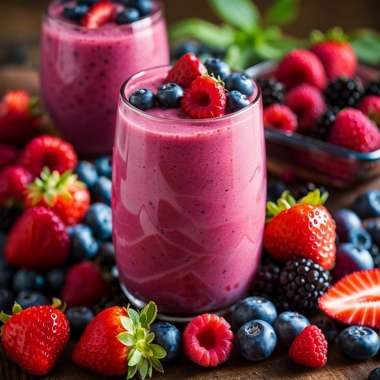

Discover the Art of Organic Smoothies in Algonquin
At Cool Breeze, we've made it our mission to redefine your smoothie experience. As the finest organic smoothie shop in Algonquin, Illinois, we blend passion, health, and flavor into every sip, delivering a refreshing and nourishing treat.
Healthy Fruit Smoothies in Algonquin, Illinois
Our extensive menu offers a kaleidoscope of flavors, catering to a diverse clientele. Whether you're a devoted health enthusiast, a vegan with discerning tastes, or a curious youngster, our smoothies will tantalize your palate and satisfy your nutritional needs.
The Organic Difference
Cool Breeze stands out through our unwavering commitment to organic ingredients. We believe that every sip should be a celebration of nature's finest offerings. We're proud to source fresh, local ingredients whenever possible, supporting local farmers and ensuring that you receive the freshest produce available.
Customized Smoothies and Daily Specials
For the adventurous, we offer unique flavors like our signature "Green Goddess" smoothie, a blend of leafy greens and tropical fruits. If you crave indulgence, our "Chocolate Protein Powerhouse" is a decadent delight packed with flavor and nutrition.
But it doesn't stop there. We invite you to join us daily to explore our "Smoothie of the Day," a creative concoction featuring the freshest seasonal ingredients. Customize your smoothie to your heart's desire, adding superfoods, plant-based options, or extra protein to match your preferences and dietary needs.
The Nutritional Powerhouse
Our smoothies aren't just delicious; they are nutrient-rich. Packed with vitamins, antioxidants, and the natural sweetness of fresh fruits, each sip is a step toward a healthier you. For the health-conscious, Cool Breeze is your sanctuary of wellness.
Community and Sustainability
We take pride in being more than just a Juice Bar. Cool Breeze is a gathering place for Algonquin foodies who appreciate quality and sustainability. Our eco-friendly practices ensure that our impact on the planet is as refreshing as our smoothies. By supporting local farmers and contributing to our community's well-being, we're building a healthier and happier Algonquin.
Join the Cool Breeze Community
As an esteemed member of the Cool Breeze community, you can also enjoy exclusive benefits through our Smoothie Loyalty Program. We believe in rewarding our loyal customers who make our community stronger and healthier.
Embrace an Organic Lifestyle in Algonquin
Cool Breeze invites you to explore our Organic Market, where you can take home some of our favorite ingredients to recreate our recipes or experiment with your own. We are more than just a smoothie shop; we are a hub for wellness, community support, and healthy living.